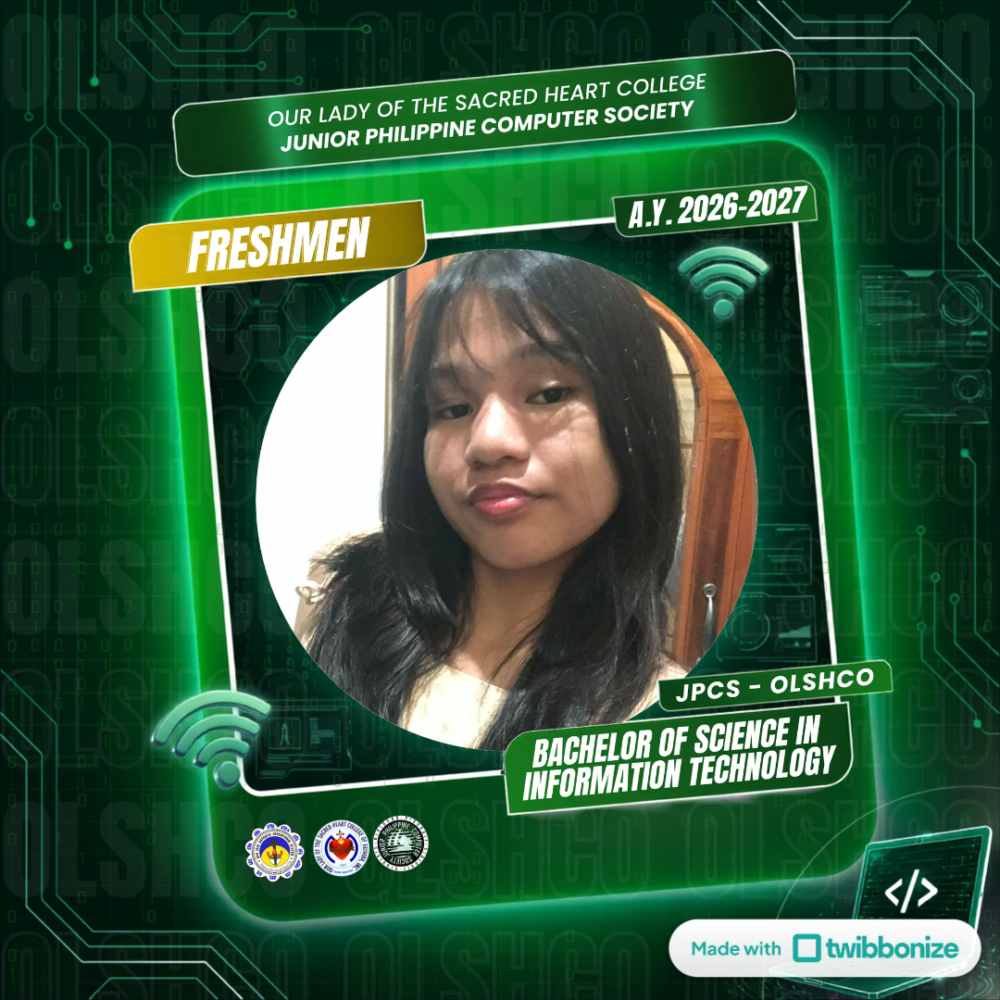

Meet the creative, expressive, and adaptable learner who enjoys exploring ideas through editing, writing, and learning new skills.
Learn More About Me
Greetings, I am Princess Joy G. Dela Cruz, a learner who enjoys expressing creativity through digital arts, writing and putting interest through video editing, infographic creation, poetry, and creative alternative universe stories. An Olschonian who believe that learning is a life long journey of personal growth, positive actions and success. I am adaptable always open to new experiences, and willing to improve my skills to become more better individual. Through this portfolio, I wanna showcase my interest, abilities, and experiences that shaped me throughout my journey.
Elementary School:Maturanoc Elementary School(2014-2020)
Grade/Year Level: Kindergarten - Grade-6
High School:Triala National High School(2020-2026)
Grade/Year Level Grade-7 to Grade 12
Course/Strand:HUMSS
These are some of the creative and personal skills that I enjoy doing and continuously developing.
Enhancing Pictures and creating visually appealing designs.
Combining clips, such as videos or picture, overlays, transitions, effects, and music that is visually appealing
Expressing my thoughts, feelings, and ideas through writing poetries.
Creating stories using my imagination and expressions through daily activities, forming a stories others would also like.
I can adapt easily through every learnings, but not all the time, there still some topics I consider my self slow learner.
I'm still in a beginmer level programmer, excercising every activities help me understand more about coding, and let me develop my problem solving skills
Creating poems, stories, and other written output that I can be myself, reflection of my imagination, thoughts, and how I decelop my writing skills.
Various academic project and activities that help me apply what I have learned this past few years, letting me explore new ideas and improve my abilities.
This section presents my final programming performance task in CC102, featuring my console-based WORD ADVENTURE game.
Click below to view my Java source code.
View Java Source CodeThank you for giving your precious time to read and explore my digital portfolio and learn more about me, have a great day ma'am/sir .
You can contact me through my email below.
delacruzprincess734@gmail.com